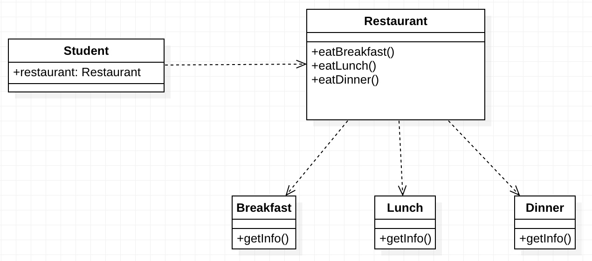
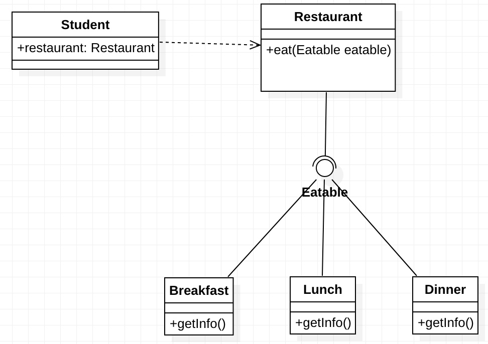
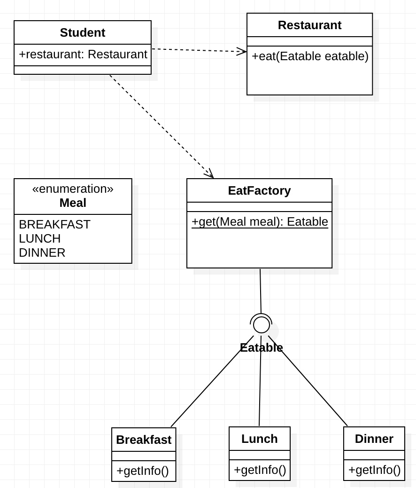

IoC 등장배경
IoC의 등장배경을 알기 위해서는 EJB나 Spring과 같은 프레임워크를 사용하기 이전 시대의 개발 방식에 대해 얘기를 해야한다.
온고지신(?)이라 하였던가.. IoC를 이해하기 위해 옛날이야기를 해보도록 하겠다.
태초에 Java로 만든 프로그램은 main()이라는 메소드에서 시작이 되었다.
main() 메소드 내에서 필요한 클래스를 개발자가 직접 코드내에서 생성하여 사용하였다.
어떠한 프로그램을 만들던지 간에 프로그램에는 모델(Model)이라는 개념이 생겨나게 된다.
이렇게 만들어진 클래스 간에서는 관계(Relation)과 의존성(Dependency)가 생기게 된다.
의존성이란? A클래스에서 B클래스의 기능을 사용할 때 클래스A는 클래스B에 의존적이다 라고 하며
A –> B 라고 표현한다 (UML에서는 클래스 간의 Dependency를 점선으로 표현한다.)
즉, B클래스의 기능이 변하게 되면 A클래스에도 영향이 생긴다는 말로 직역할 수 있다.
이해를 돕기위해 급식을 받는 학생에 대한 예제를 들어보겠다.
(이 학교는 아침/점심/저녁을 다 주는 좋은 학교이다)
클래스 -> 클래스 호출 관계

1 | public class Student { |
1 | public class Restaurant { |
Student 클래스는 밥을 먹기위해 Restaurant클래스를 new로 생성하였다.
Restaurant클래스 내에서는 아침/점심/저녁을 먹을 수 있도록 각각 Breakfast, Lunch, Dinner클래스를 new로 생성하였다.
위의 의존성에 대해 위 예제를 풀어보면 Student는 Restaurant에 대해 의존적이다. (Student —> Restaurant)
Student클래스에서 Restaurant클래스를 생성하여 밥을 먹기 때문이다. 만약에 Restaurant 클래스에서 밥을 못먹게 하면
Student클래스는 정상적으로 밥을 먹는 기능을 수행할 수 없다.
Restaurant클래스는 Breakfast/Lunch/Dinner에 대해 의존적이다.
각각의 메소드에서 Breakfast/Lunch/Dinner클래스를 생성하여 밥을 먹는 행위를 하도록 하고있다.
가만히 보게 되면 의존성에 대한 공통점을 발견할 수 있다.
그것은 바로 new이다. 클래스 내에서의 new는 곧 의존성을 의미하게 된다. new로 생성한 클래스가 문제가 생기면 사용을 하는 클래스의 기능에도 문제가 생기기 떄문이다.
따라서 프로그래밍의 의존성은 new이다 로 간단하게 정의를 내릴 수 있겠다.
클래스 -> 인터페이스(interface) -> 클래스 구조
클래스 내에서 클래스를 생성하여 호출 하는 경우에는 변경에 많은 비용이 발생하게 된다.
만약에 학교에서 야식까지 먹어가며 밤을 새는 경우에는 야식이라는 의존성을 또 추가하게 된다.
뿐만 아니라 Breakfast/Lunch/Dinner 클래스에 변경이 생기는 경우에도 Restaurant 클래스는 영향을 받게 된다.
이와 같은 문제를 쪼금 더 편하게 해결 할 수 있게 Java에서는 interface라는게 있다.
(개인적으로 Service나 Repository 같은 클래스들을 생성 할 때 웬만하면 interface를 선언하는 편이다.)
차후에 Mock객체 생성하기도 좋고, 요구사항이 변경 되었을 때 유연하게 대응 할 수 있어 개인적으로는 Interface를 자주 사용하는 편이다.
Breakfast/Lunch/Dinner클래스를 자세히 보면… getInfo() 메소드가 공통적으로 쓰이고 있다.
(getInfo메소드는 식단에 대한 정보이다.)
따라서 하나의 interface로 Breakfast/Lunch/Dinner클래스를 추상화 할 수 있다.
그렇게 되면 eat이라는 메소드 하나만으로도 아침~저녁을 먹을 수 있는 기능을 구현할 수 있다.
위에서 말로 한 얘기를 코드로 풀어보면..

1 | public class Student { |
1 | public interface Eatable() { |
1 | public class Restaurant { |
위의 클래스 -> 클래스 간의 Dependency 구조보다는 interface를 사용하므로써 많이 결합도가 완화된 모습이다.
이전에는 Restaurant 클래스가 Break/Lunch/Dinner에 대해 모두 Dependency를 가지고 가는 구조여서 결합도가 강한 형태였는데, interface를 사용하여 결합도를 많이 약화 시켰다.
자세히 보면 Student클래스에서 Break/Lunch/Dinner를 생성하여 Restaurant에 주입해 주었다.
이러한 모습이 향후 DI의 개념과 비슷한 개념으로 발전하게 된다.
Restaurant입장에서는 개발자가 생성한 객체가 아닌 외부로 부터 주입받은 형태로 Break/Lunch/Dinner에 대해 사용을 하기 때문이다.
이 부분을 잘 이해하면 차후 IoC와 DI를 이해하는데 크게 도움이 된다.
클래스 -> 팩토리(factory) 패턴
디자인 패턴 중에는 팩토리(Factory) 패턴이라는 구현 방식이 있다.
팩토리 패턴에 대해 간단하게 설명하자면, 객체의 상태(State) 또는 구분자(Type)을 통해 필요한 객체를 Return 해주는 패턴이다. 위에서 설명한 클래스 -> 인터페이스 방식을 차용하여 한 단계 더 Wrapping한 개념이라고 생각하면 편하다.
팩토리 패턴을 이용하면 아예 개발자에게 객체 생성에 대한 권한을 주지 않겠다! 를 구현 할 수 있게 된다.
개발자가 객체 생성을 직접 하지 않고도 시스템에 요청하여 원하는 객체를 얻어낼 수 있다. <– 이 내용은 DL(Dependency Lookup)과 비슷한 개념으로 통할 수 있을 것 같다.
팩토리 패턴으로 만든 코드를 만들게 된다면, 아래와 같이 만들 수 있을 것이다.

1 | public class Student { |
1 | public enum Meal { |
1 | public class EatFactory() { |
1 | public interface Eatable() { |
1 | public class Restaurant { |
이제 개발자가 개발하는 코드에서 Breakfast/Lunch/Dinner에 대한 Dependency는 완전히 제거 되었다.
야식이라는 식사 메뉴가 추가되어도 Meal enum에 야식 항목을 추가하고, EatFactory에 야식에 대한 case만 추가 해 주면
Student 클래스는 유연하게 추가된 기능에 대해 대처가 가능하다.
IoC 패턴
IoC패턴을 알기 전에 IoC에 대해 간단히 설명하자면..
기능을 담당하는 POJO class를 프로그램 시작 시, IoC 컨테이너에 Bean이라는 이름으로 객체를 생성해 둔다.
이렇게 싱글톤으로 생성된 객체들을 필요한 시점에 IoC 컨테이너에서 의존성을 가지는 객체에 직접 주입을 해주는 패턴을 IoC패턴이라 한다.
쉽게 말하면 객체의 멤버에 대한 상태가 없고(stateless) 기능의 역할을 담은 클래스들을 1개씩 IoC컨테이너라는 상자에 담아두고, 의존성 객체가 필요한 경우 IoC컨테이너에서 필요한 객체를 주입해준다. 라고 생각하면 편할 것 같다.
객체에 대해 new 생성자를 통해 객체를 생성할 필요가 없으니, 메모리적인 낭비가 없다는 장점이 있을 뿐 더러 개발자에게 객체 관리에 대한 미시적인 역할을 맡기지 않아도 되는 장점이 있다. 자세한 내용은 다음 장에 기술하도록 하겠다.
위의 내용을 Spring을 사용한 개발이라고 한다면… 아래와 같이 코드를 짤 수 있겠다.
1 |
|
1 | public enum Meal { |
1 |
|
1 | public interface Eatable() { |
1 |
|
Spring에서는 component-scan이라는 기능을 통해 @Component 어노테이션이 붙은 클래스는 IoC 컨테이너에 Bean으로써 자동 등록 해준다. 이러한 Bean은 @Autowired / @Inject 와 같은 어노테이션을 통해 클래스에 주입을 해줄 수 있다.
이렇게 되면 개발자가 new를 통해 의존성을 강제화 하지 않고 프레임워크가 이 역할을 대신 수행해 준다.
개발자가 객체 생성과 의존성 주입에 대한 역할을 대신 해준다
Inversion of Control (객체 관리과 의존성 관리를 시스템에서 해준다 : 제어의 역전) 이라고 불리게 되었다.
참조
http://www.javajigi.net/pages/viewpage.action?pageId=3664&focusedCommentId=3751#Spring%ED%94%84%EB%A0%88%EC%9E%84%EC%9B%8C%ED%81%AC%EC%86%8C%EA%B0%9C%EC%99%80IoC%EB%B0%8FSpringIoC%EC%9D%98%EA%B0%9C%EB%85%90-2.1IoC%EB%9E%80%EB%AC%B4%EC%97%87%EC%9D%B8%EA%B0%80%3F
http://wiki.javajigi.net/pages/viewpage.action?pageId=281
https://jongmin92.github.io/2018/02/11/Spring/spring-ioc-di/
https://okky.kr/article/415474
http://www.javajigi.net/pages/viewpage.action?pageId=68
http://www.javajigi.net/download/attachments/5614/V3_InversionOfControl.pdf?version=1
http://isstory83.tistory.com/91
토비의 스프링 VOL.2 Spring IoC